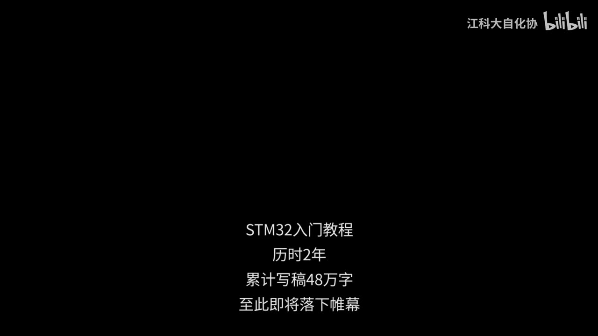
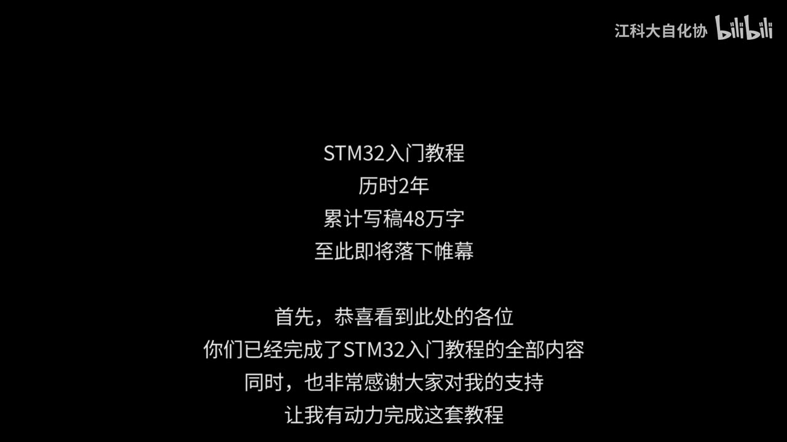
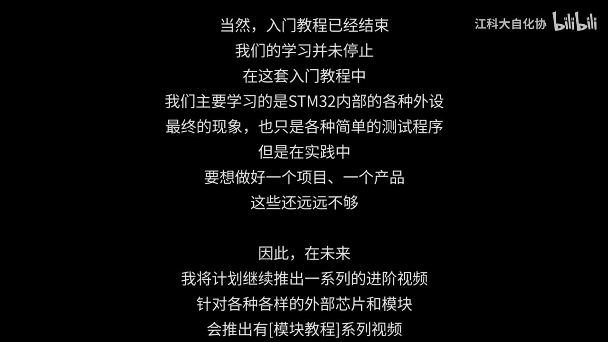
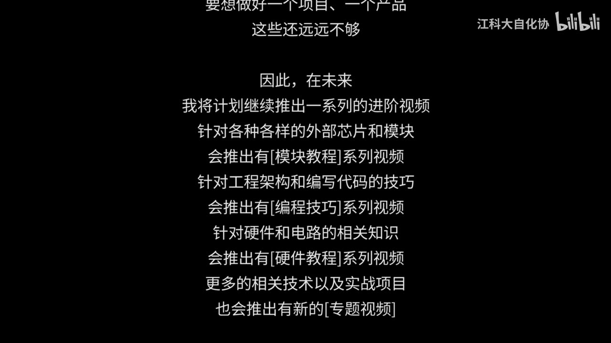
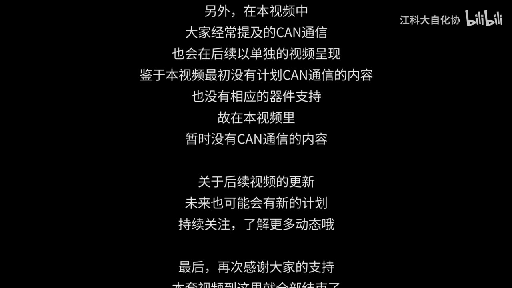
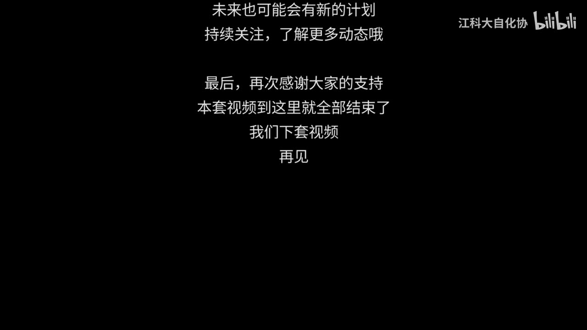

结课寄语与后续预告 — 学习笔记
一句话结论
这套历时 2 年、累计写稿 48 万字的教程在此落下帷幕：入门课只讲 STM32 内部外设，现象只是简单的测试程序，做项目做产品还远远不够；后续计划推出 [模块教程]/[编程技巧]/[硬件教程]/[专题视频] 四个系列，CAN 通信因最初没计划、缺器件支持，留待单独视频。
本集定位
- 纯收尾集：全片 90 秒，无 PPT、无代码、无演示，只有黑底滚动文字 + 结尾 logo 页；
- 顺序：标题 → 致谢 → 课程定位 → 四个系列预告 → CAN 说明 → 告别；
- 承接 [15-2]（
MyFLASH/Store分层封装那一集），不含技术知识点，别当正常课时写。
1. 标题与致谢
- 标题四行：「STM32入门教程／历时2年／累计写稿48万字／至此即将落下帷幕」；
- 致谢：「恭喜看到此处的各位／你们已经完成了STM32入门教程的全部内容／同时，也非常感谢大家对我的支持／让我有动力完成这套教程」。

图 1：标题四行——「STM32入门教程／历时2年／累计写稿48万字／至此即将落下帷幕」（黑底居中）

图 2：标题 + 致谢四行——「首先，恭喜看到此处的各位／你们已经完成了STM32入门教程的全部内容／同时，也非常感谢大家对我的支持／让我有动力完成这套教程」
2. 课程自我定位
- 「当然，入门教程已经结束／我们的学习并未停止」；
- 「在这套入门教程中／我们主要学习的是STM32内部的各种外设」；
- 「最终的现象，也只是各种简单的测试程序」；
- 「但是在实践中／要想做好一个项目、一个产品／这些还远远不够」；
- 一句话：入门课教「单个外设怎么用 + 简单程序验证」，不教「怎么做产品」。

图 3：课程定位段落——「当然，入门教程已经结束／我们的学习并未停止／在这套入门教程中／我们主要学习的是STM32内部的各种外设／最终的现象，也只是各种简单的测试程序／但是在实践中／要想做好一个项目、一个产品／这些还远远不够」，并接「因此，在未来／我将计划继续推出一系列的进阶视频／针对各种各样的外部芯片和模块／会推出有［模块教程］系列视频」
3. 四个后续系列预告
| 系列 | 面向方向 |
|---|---|
| [模块教程] | 针对各种各样的外部芯片和模块 |
| [编程技巧] | 针对工程架构和编写代码的技巧 |
| [硬件教程] | 针对硬件和电路的相关知识 |
| [专题视频] | 更多的相关技术以及实战项目 |
- 原句：「因此，在未来／我将计划继续推出一系列的进阶视频」→ 四个方向依次展开（方括号为画面原文）；
- 是「计划」，不是已发布内容。

图 4：四个后续系列预告完整——「因此，在未来／我将计划继续推出一系列的进阶视频／针对各种各样的外部芯片和模块／会推出有［模块教程］系列视频／针对工程架构和编写代码的技巧／会推出有［编程技巧］系列视频／针对硬件和电路的相关知识／会推出有［硬件教程］系列视频／更多的相关技术以及实战项目／也会推出有新的［专题视频］」
4. CAN 通信（唯一被点名的未覆盖项）
- 「大家经常提及的CAN通信／也会在后续以单独的视频呈现」；
- 「鉴于本视频最初没有计划CAN通信的内容／也没有相应的器件支持／故在本视频里／暂时没有CAN通信的内容」；
- 即：最初没计划 + 缺少器件支持，承诺后续单独出视频。

图 5：CAN 段落与后续更新——「另外，在本视频中／大家经常提及的CAN通信／也会在后续以单独的视频呈现／鉴于本视频最初没有计划CAN通信的内容／也没有相应的器件支持／故在本视频里／暂时没有CAN通信的内容」；接「关于后续视频的更新／未来也可能会有新的计划／持续关注，了解更多动态哦」与「最后，再次感谢大家的支持」
5. 收尾与 logo
- 「关于后续视频的更新／未来也可能会有新的计划／持续关注，了解更多动态哦」；
- 「最后，再次感谢大家的支持／本套视频到这里就全部结束了／我们下套视频／再见」；
- 文字滚出后纯黑，约 01:24 起切江协科技 logo 页（
jiangxiakeji.com）。

图 6：收尾四行——「最后，再次感谢大家的支持／本套视频到这里就全部结束了／我们下套视频／再见」
图 7：结尾 江协科技 logo 页（jiangxiakeji.com）
坑与易错点
- 本集不是知识集：90 秒纯收尾，没有外设/代码/演示，别从里面找技术点。
- 引用以画面文字为准：滚动字幕 OCR 有系统性重复抖动（一句两遍、一对错），还有三处整段丢失，直接 grep transcript 会漏。
- 四个系列名称写全：[模块教程]／[编程技巧]／[硬件教程]／[专题视频]（画面用方括号，不要写成「模块视频」）。
- 未覆盖项只点名 CAN：原因＝最初没计划 + 没有器件支持，别顺手把别的项也说成未覆盖。
- 「进阶系列」是预告，视频说的是「计划继续推出」，不是已有课程。
- logo 页文字「江协科技／jiangxiakeji.com」是图形文字，不在字幕带里，OCR 抓不到，需按画面记录。